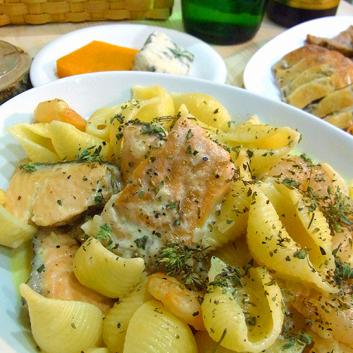
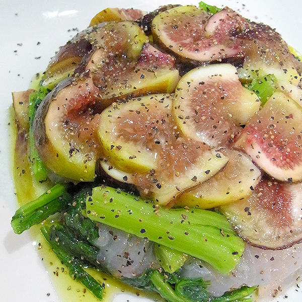

ラタトゥイユ
北海道は中札内産のバカでかい！ズッキーニとお茄子が送られてきました。通常、日本の市場では出回らない、本場フランス並みの大きさです。それをみたら・・・「もう～ラタトゥイユでしょ～」って、感じで、久々に作ってしまいました～やっぱり、ラタトゥイユには大味的なバカでっかい、食材がイイ！ってな感じで、美味しくできました～

鮭とエビのムンステールソースのコキアージュパスタ
ムンステールチーズは大変おにおいがイイ感じであるので、表面を軽く水洗いしてから、ソースにしました。熟成されたチーズならではの旨味がソースにとけ込み、なんともいえないパスタに相成りました～鮭とのお相性、満点レベル～。このコキアージュパスタはその開いたお口の隙間にソースが溜まり込むので、噛みしめた瞬間・・・「くちょ～～～」って、なんともいえない快感と感触と滋味が味わえます。
スズキと菜花といちじくのマリネ
菜花といちじくをオリーブオイルでマリネってみました。スズキは氷水でしめて、塩でもんでたっぷりのオリーブオイルにからめて冷蔵庫で寝かせる。菜花は湯通してなめらかふにゃりとさせる。その二つをさらにオリーブオイルを追加してからめて冷蔵庫へ。いちじくを程よい感じに切り分けてボールの底にしいて先ほどのを上に詰め込む。それをお皿にひっくり返したらできあがり～味付けは塩こしょうのみ。やっぱり出会いものの食材はうまい！
